Chapter 3: Decomposition of Graphs
Why Graphs
The range of problems that can be solved by representing your problem in Graphs.
Graph representations,
Adjacency Matrix
$$ a_{ij} = \begin{cases} 1 \text{ if there is an edge from } v_i \text{ to } v_j \ 0 \text{ otherwise} \end{cases}$$
Or, *Adjacency List*,
$|V|$ linked lists, one per vertex. The list for *u* holds the names of vertices to which *u*, has an outgoing edge.
Depth first search in undirected Graphs
Exploring mazes
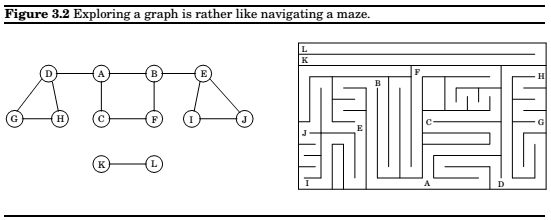
So, we need to simulate a piece of chalk(to check whether the node has been visited), and a string(to retrace our steps back home).
The analogs that we have are, a boolean flag as a chalk, and a stack as a string(in this case its the recursive system stack).
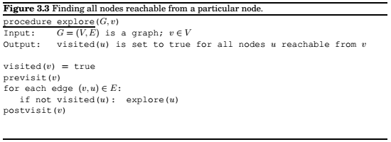
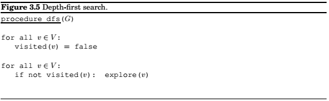
Running time, $O(|V| + |E|)$
Connectivity in undirected graphs
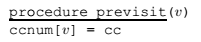
Identify and assign different integers to the different connected components in a undirected Graph.
Previsit and Postvisit orderings
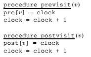
Property : For any node $u$ and $v$, the two intervals $[pre(u), post(u)]$ and $[pre(v), post(v)]$ are either disjoint or one is contained within the other.
Depth-First search in Directed Graphs
Types of edges
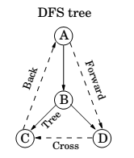
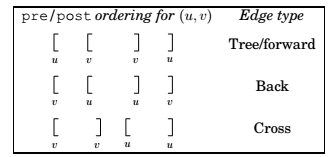
Directed Acyclic Graphs
Property : A directed graph has a cycle if and only if its depth-first search reveals a back edge.
Property : In a dag, every edge leads to a vertex with a lower $post$ number.
Property : Every dag has at least one source and at least one sink.
Strongly Connected Components
Defining connectivity for directed graphs
Two nodes u and v of a directed graph are connected if there is ap path from u to v and a path from v to u.
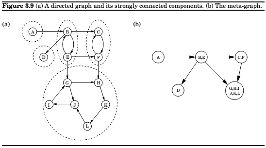
This relation partitions V into disjoint sets that we call strongly connected components.The graph above has five of them.
Property : Every directed graph is a dag of its strongly connected components.
An efficient algorithm
Property 1 : If the $explore$ subroutine is started in a node $u$, then it will terminate precisely when all nodes reachable from $u$ have been visited.
Therefore, if we call explore on a node that lies somewhere in a sink strongly connected component(a strongly connected component that is a sink in the meta-graph), then we will retrieve exactly that component.
But, how to find a node that we know for sure lies in a sink strongly connected component.
How do we continue once the first component has been discovered.
Property 2: The node that receives the highest $post$ number in a depth-first search must lie in a source strongly connected component.
which directly follows from,
Property 3: If $C$ and $C'$ are strongly connected components, and there is an edge from a node in $C$ to a node in $C'$, then the highest $post$ number in $C$ is bigger than the highest $post$ number in $C'$.
So, now we can determine whether a particular node lies in a source component of the meta graph. The opposite of what we need.
Now, consider the reverse graph. It will have exactly the same strongly connected components as G. So if we find a part of source in the reverse graph, this node will be a part of a sink component in the original graph.
Once we find the first strongly connected component a d deleted it from the graph, the next node with the highest post number will be a part of another sink component in G.
The resulting algorithm,
- Run depth-first search on $G^R$.
- Run the undirected connected components algorithm on $G$ and during the depth-first search, process the vertices in decreasing order of their post numbers from step 1.
Chapter 4: Paths in Graphs
Distances
The distance between two nodes is the length of the shortest path between them.
Breadth first search
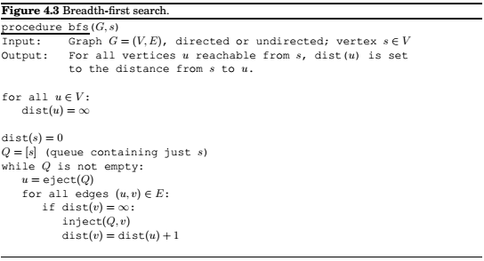
Dijkstra’s algorithm
An adaptation of breadth-first search
For any edge $e = (u,v) \text{ of } E$, replace it by $l_e$ edges of length 1, by adding $l_e - 1$ dummy nodes between $u$ and $v$.
Therefore, we can compute distances in graph by running BFS on the new graph.
We can do this by setting an estimated time of arrival for each new node in the frontier.
The nodes are then being processed on the basis of earliest time. The right data structure to do this is a priority queue(usually implemented by a heap).
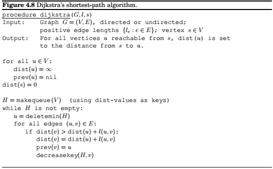
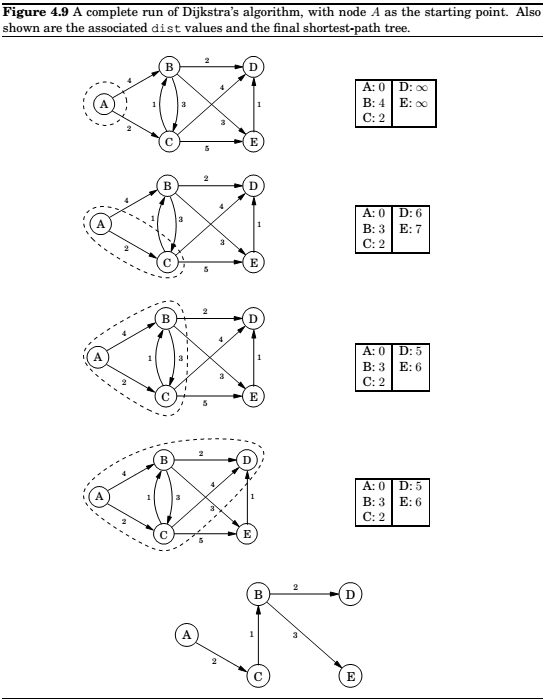
Running time
$O(|V| + |E|)\log|V|$
Which heap is best ?
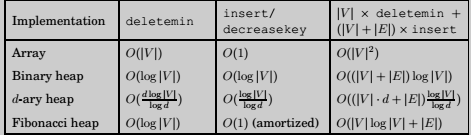
Priority Queue Implementations
Array
Simplest implementation of a priority queue is as an unordered array of key values for all potential elements.
Binary Heap
Here elements are stored in a complete binary tree. In addition, a special ordering constraint is enforced: the key of any node of the tree is less than or equal to that of its children, i.e. the root always contains the smallest element.
d-ary heap
Identical to a binary heap, except that the nodes have d children instead of just two.
Shortest paths in the presence of negative edges
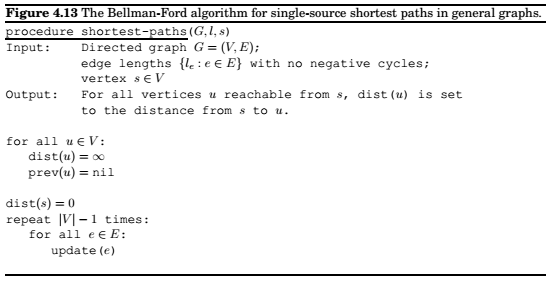
Note : The presence of a negative cycle means we cannot answer the question of shortest paths in the given graph.
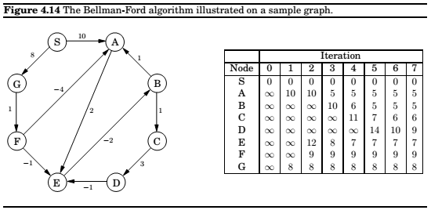
Shortest paths in dags
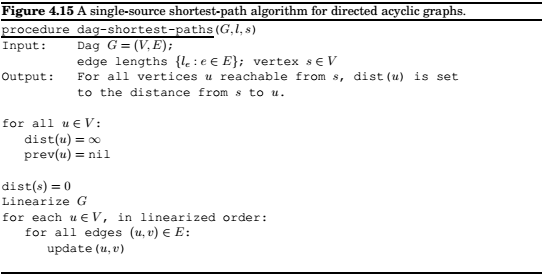